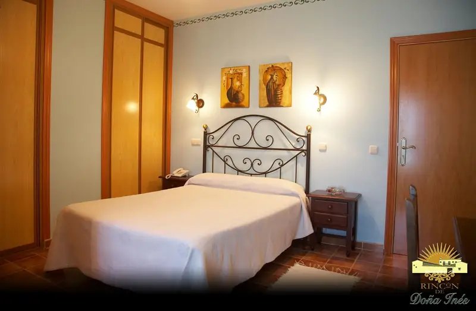
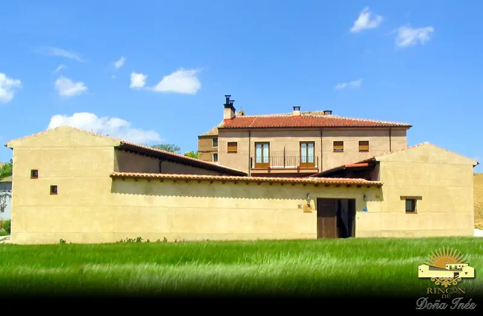
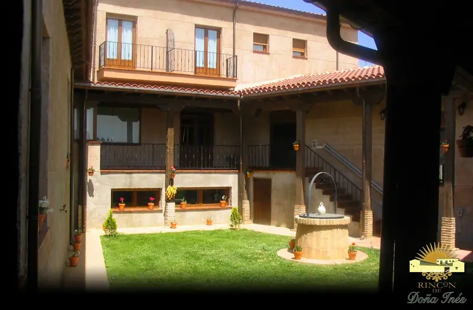
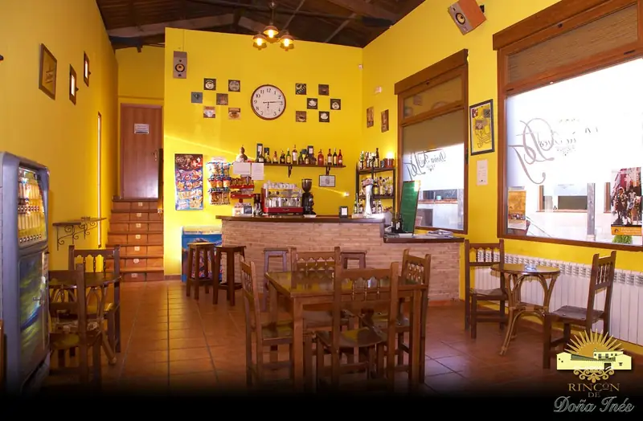
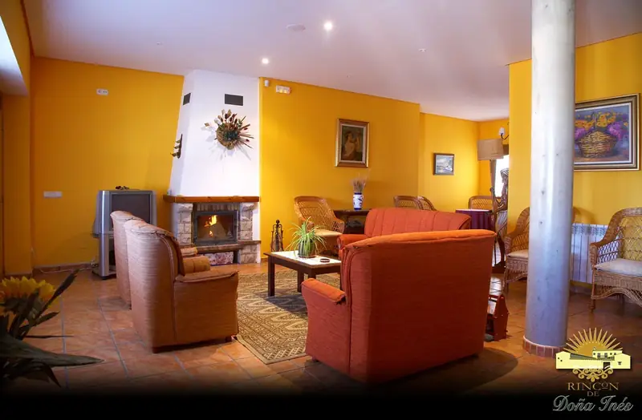
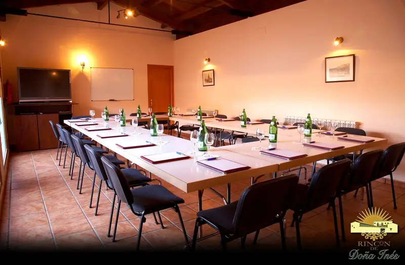
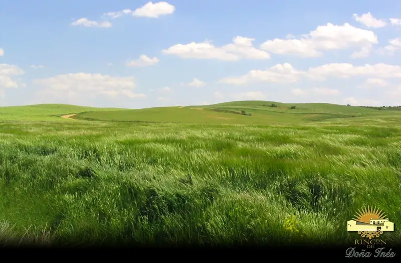
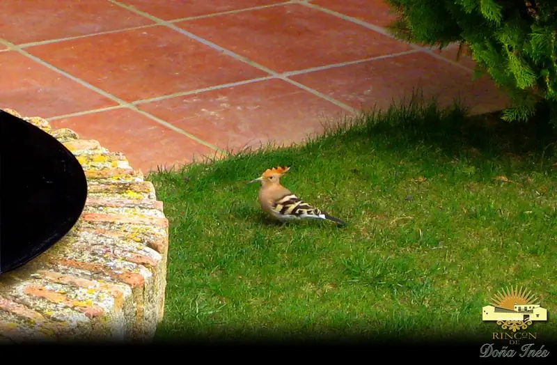
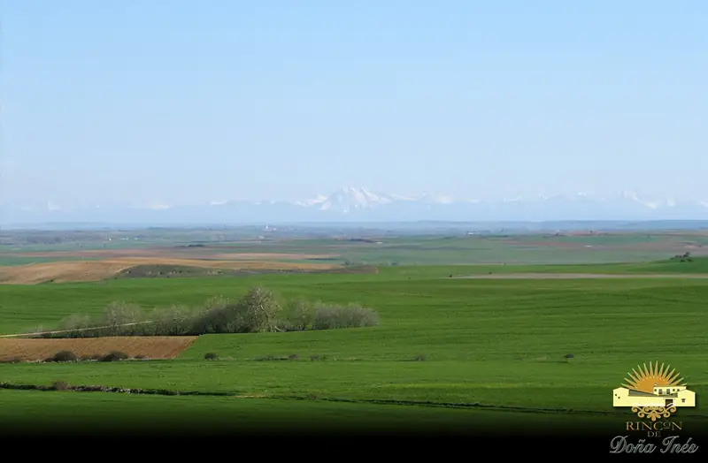
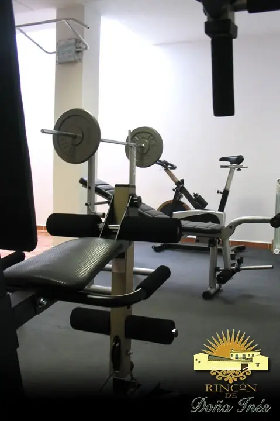
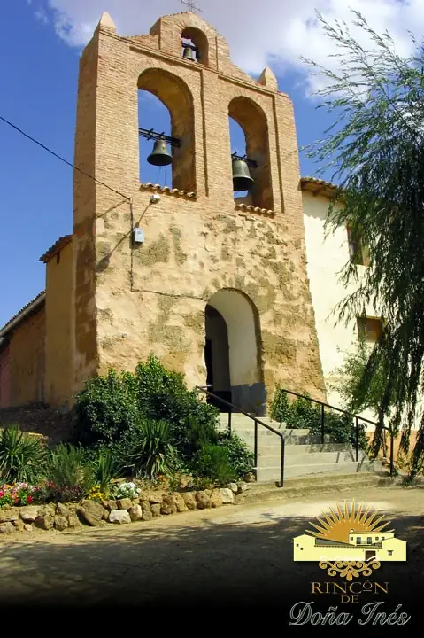
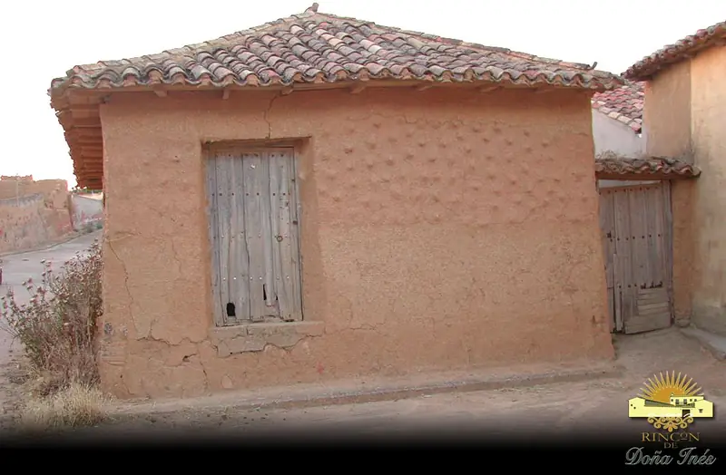
- Canal de Castilla
- Museo del Pan (Mayorga)
- Urueña, Villa del Libro
- Villa Romana La Olmeda
- Laguna de la Nava
- Camino de Santiago
- Villalón de Campos (8 km)
C/ Iglesia, 2 · 47608 Villanueva de la Condesa (Valladolid)